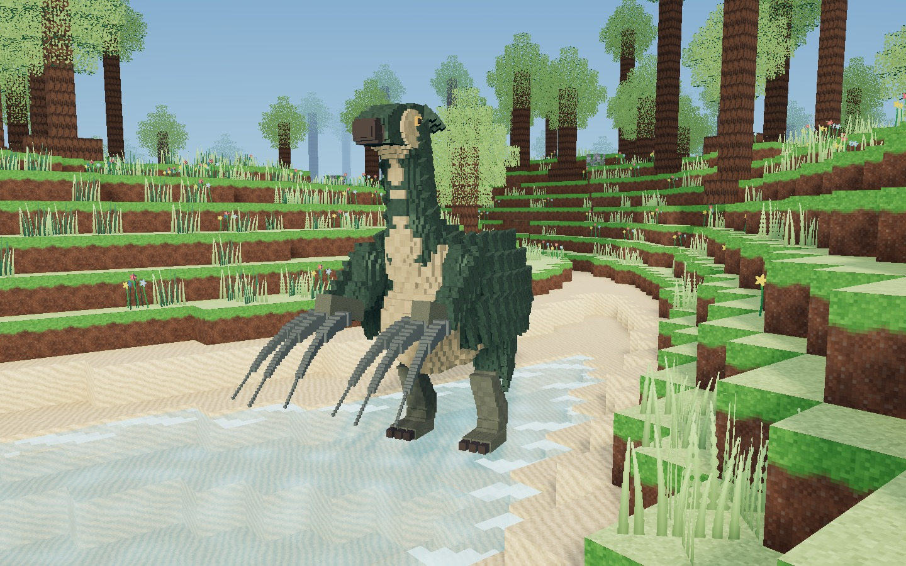
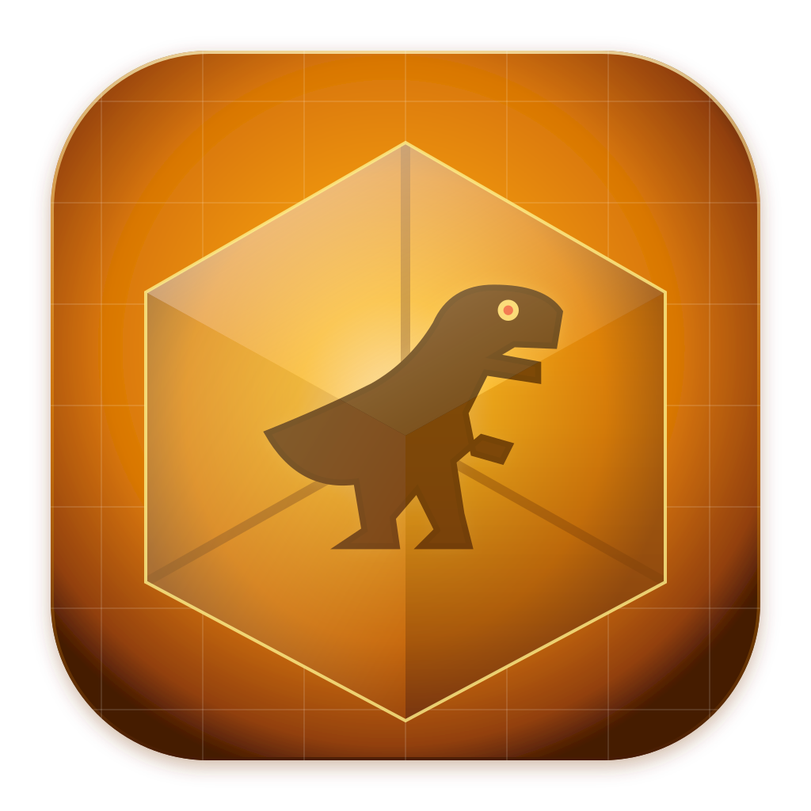
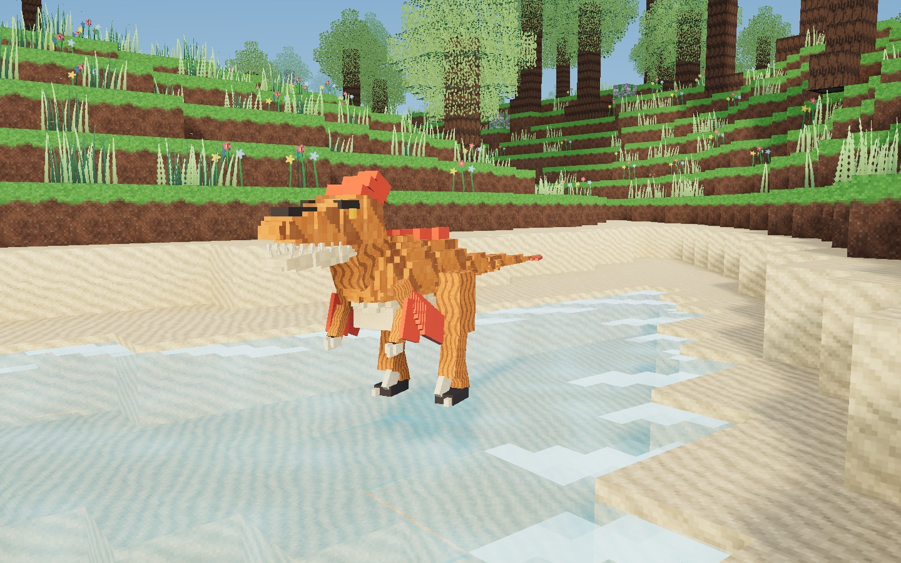
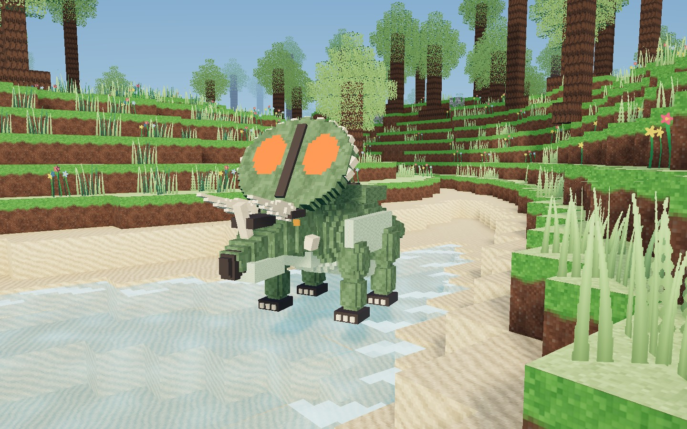

OBSERVE. RESPEITE. APRENDA.
Terizinossauro
Uma silhueta inconfundível.
Garras que merecem distância.

PRIMALITH
UM MUNDO ANCESTRAL. SUA PRÓPRIA HISTÓRIA.
A natureza escreveu as regras.
Agora é a sua vez de deixar uma marca.
Nem tudo aqui
quer te conhecer.
Um paraíso de blocos. Uma terra indomável. Em Primalith, cada expedição pode virar uma descoberta, um novo abrigo ou uma boa razão para correr.
Colete, fabrique, construa e crie laços com criaturas pré-históricas. A história da sua sobrevivência começa na praia.
Uma ilha finita.
Muito chão para explorar.
ESCOLHA SEU PRÓXIMO DESTINO
Da sombra da selva ao silêncio do gelo.
Cada território muda o que você precisa
para continuar vivo.

A sua primeira fogueira pode nascer aqui. Areia, água rasa e fauna costeira ajudam no começo, mas continue atento aos predadores.
Clima ameno · Dificuldade fácilDa selva ao gelo, em imagens gravadas no jogo.
VOCÊ TEM COMPANHIA
Aprenda a observar antes de se aproximar.
A mesma criatura que ameaça sua expedição
pode se tornar parte da sua história.

Uma silhueta inconfundível.
Garras que merecem distância.


Dome respeitando a dieta de cada espécie, equipe selas e encontre companheiros para explorar.
Forme casais, proteja os ovos e acompanhe o crescimento de filhotes até a vida adulta.
Maior, mais forte e marcado pelo brilho vermelho. Alguns encontros exigem um plano melhor.
SEU ABRIGO NÃO VAI SE CONSTRUIR SOZINHO
Da primeira fogueira à próxima grande expedição. Cada recurso tem um destino e cada nível abre novas possibilidades.
Começar a explorarProcure alimento, cuide da sede e prepare sua comida. Nem toda água é segura. Nem toda carne está pronta para comer.
Recolha materiais, desbloqueie receitas e monte sua oficina. Fogueira, fornalha e mesa de ferramentas fazem parte da jornada.
Coloque blocos, erga paredes e prepare um abrigo para voltar depois de explorar. O mundo voxel também é sua matéria-prima.
Evolua atributos, descubra ruínas e cumpra missões. A noite e os territórios mais difíceis guardam seus próprios desafios.
UM MUNDO COMPARTILHADO
Abra uma sala, compartilhe o código e explorem juntos.
O co-op em rede local conecta a sua próxima aventura.
Servidores públicos e partidas pela internet não fazem parte desta etapa.
A SUA HISTÓRIA COMEÇA AQUI
Primalith está em desenvolvimento contínuo.
Baixe uma versão oficial e acompanhe a evolução do jogo.
Confira o pacote disponível na página oficial.
Instalador para Windows de 64 bits.
Windows: o download aparece aqui assim que o instalador for publicado.
Consultando os arquivos do repositório oficial.
Os computadores precisam estar na mesma rede local. Um jogador cria a sala em “Jogar em rede” e compartilha o código e a senha, se tiver definido uma. Os dois devem usar a mesma versão do jogo.
Sim. O aplicativo consulta as versões oficiais ao abrir e mantém a atualização automática. Você também pode acompanhar os pacotes e as mudanças na página de releases.
O jogo está em evolução. Salve uma cópia de segurança do seu mundo antes de atualizar. O desempenho varia com o equipamento e as opções gráficas. A nova edição desktop para macOS requer macOS 13 ou posterior. A compatibilidade final no Windows está em validação.